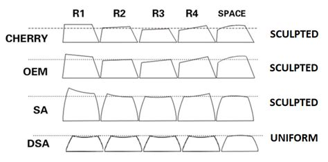
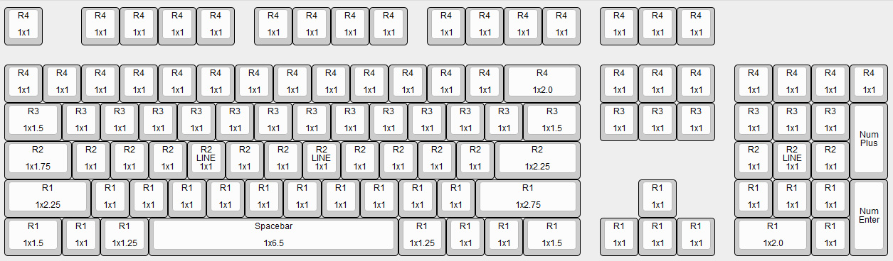
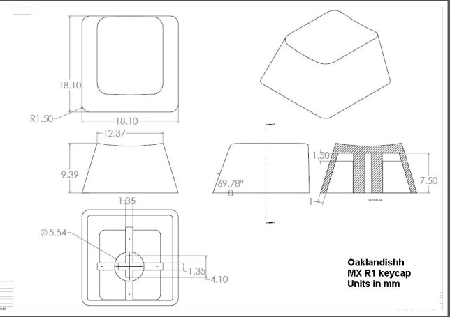
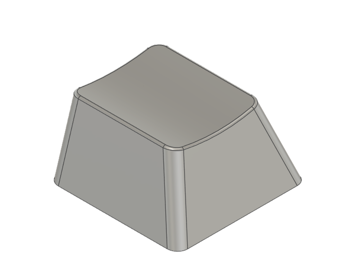
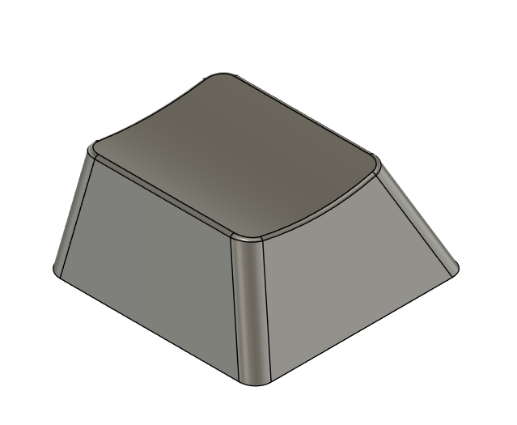
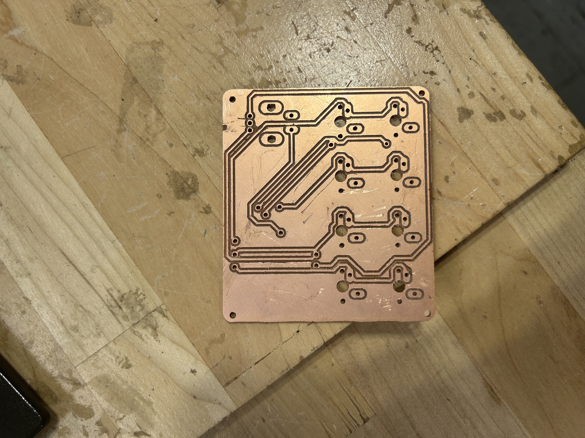
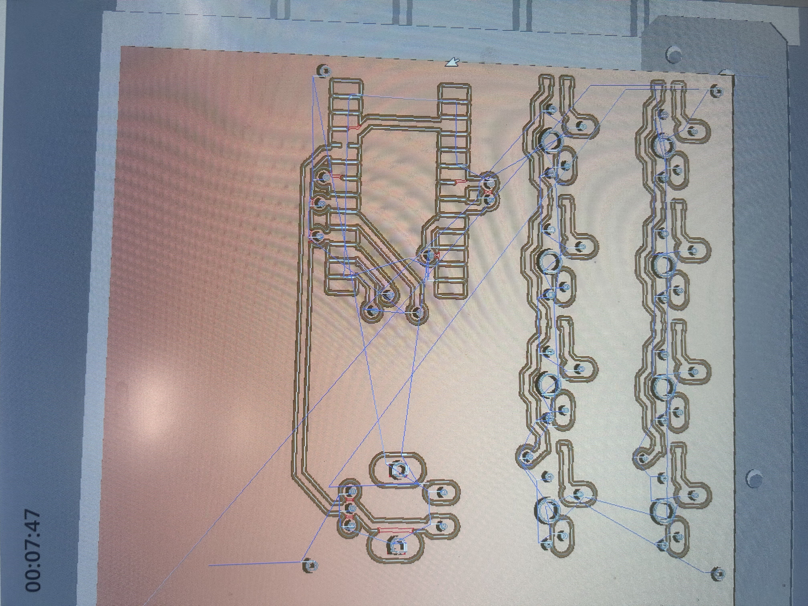
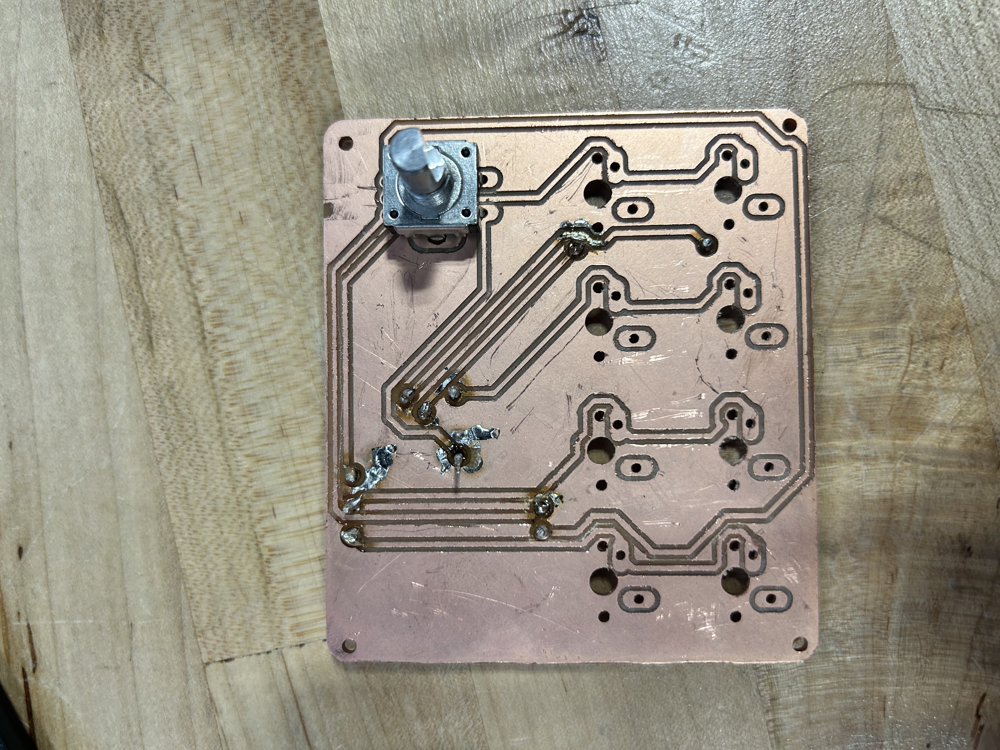
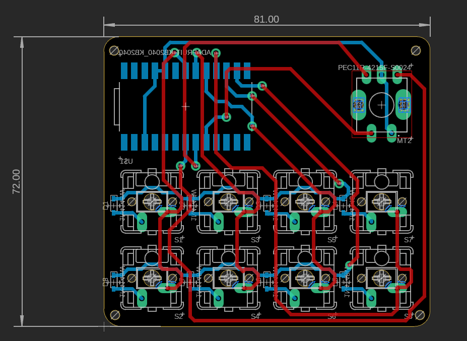
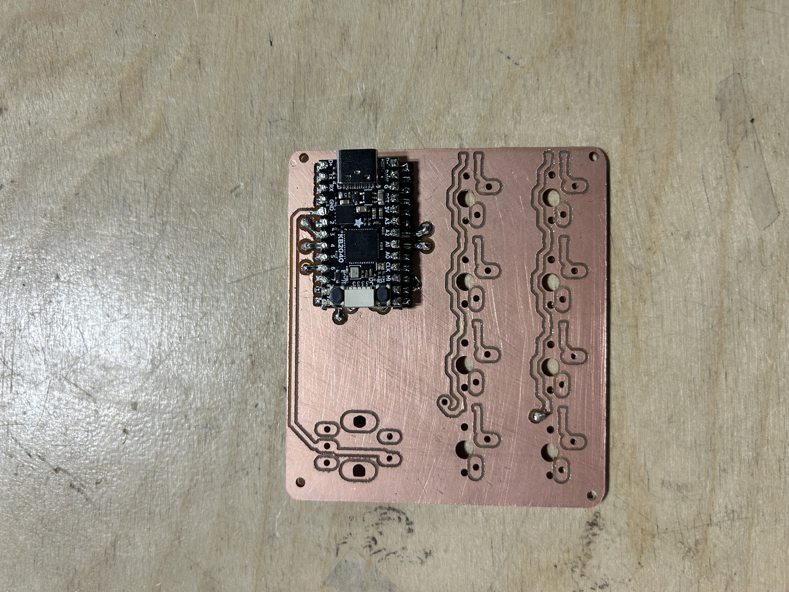

junior week nov. 10, 2025
no school tuesday again lol
keycaps
started the week by creating the keycaps which i will have to make for the keyboard anyways. however, i didn't know that it would be this hard.
first learned that different keyboards have different keycap taps. since i'm using cherry profile (which is generally the standard), i made my keycaps based off of it

all the different keycap types. there's a lot as you can see

cherry keycaps and size on a full keyboaard
you may have noticed that each keycap has different dimensions as well based on their row (the "r") this meant i had to create multiple keycaps
i found a drawing for the r1 cherry profile keycaps, and with some help from tim, created the first keycap.

my refrence drawing. tim carried me in making this bc i didn't understand how to make this at all
in the end, my 1x1 r1 cherry profile keycap looked like this:

with the process learned, i made a new keycap but for the 1x1 r2, estimating on the slant and height due to the difference and lack of model
here's what it looked like:

parts
i was originally going to finish up the keycaps before continuing, but all my 3d printed parts were done, along with all the switches, diodes, and the encoder
however, there were some problems. first of all, my tolerances on my knob were wrong, so i increased the tolerance, but forgot to extrude it all the way, leading to the knob not fitting. i then repreated it for the 3rd time, increasing both the tolerances and the thickness (so it fit better with the hole on the top case), and accidently made the tolerances a bit big.
i will be keeping the knob, as it still functions and the slight noise it makes and the easy release isn't a huge deal
pcb
since i had all the parts, i decided to just make the pcb, as it was the only thing left.
tim helped me a lot with teaching me how to mill a double sided pcb, and it turned out nicely.


front and back of the double sided pcb. my first one
reaching this was a nightmare though. there were so many problems during the milling process, mostly because of the lack of space for the 1/32" drill bit that i was using

the red parts indicate that it cannot be milled. therefore tim had to manually create the traces there...
i decided it wasn't a huge deal, as tim mentioned he could just manually cut the traces, but when i went to solder the pcb, i messed up.
since i'm quite inexperienced with soldering, and the pads for the via are quite small, i ended up burning one of the pads and breaking a trace.

i am not showing the back. the back is an absolute nightmare.
so i created a new pcb using my newfound knowledge.
first, i decided to fix my pcb so that i could mill everything without any errors. this took quite a while due to the limited space on the pcb due to the size
after over 10 iterations of moving traces and via locations, the pcb ended up looking like this:

those two red lines at the very bottom was a nightmare. i had to move it literal 0.001 mills or else the top trace would be too close to the pad, or too close with the bottom trace
with no errors, i decided to mill my pcb. however, the holes were slightly offset from the pads, but it ended up working
to not waste materials, i decided to employ miles to help me solder the via's and the kb2040 (which should be the hardest components)


beautiful solder job. yes i'm glazing.
we did have a problem where the solder from the via's "inside" the kb2040 caused it to not sit perfectly flat on the smd pads. to counteract this, i thought of the idea of using 90-degree headers for some height and to make soldering it a bit easier
i'm going to try and solder one of the smd diodes (they are legit microscopic, idk how i'm gonna do so) and see how it turns out. i'm gonna use the first board to also practice my soldering skills, as i struggle to have the solder stick onto the pads rather than the wires
hopefully, if i can get the keycaps printed (r1 1x1) and finish soldering all of this, i just have to edit my code for diodes and the encoder, and i'll be done with this project